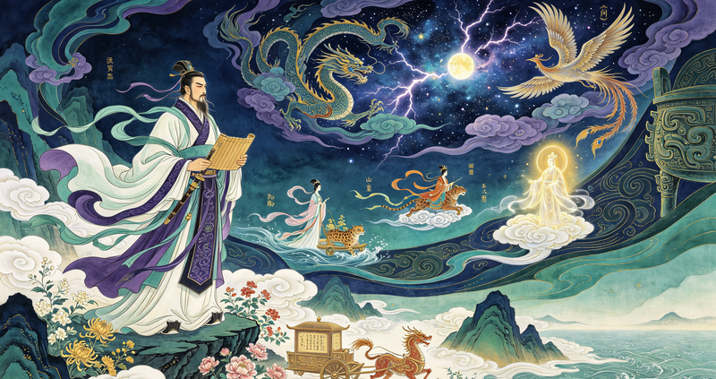
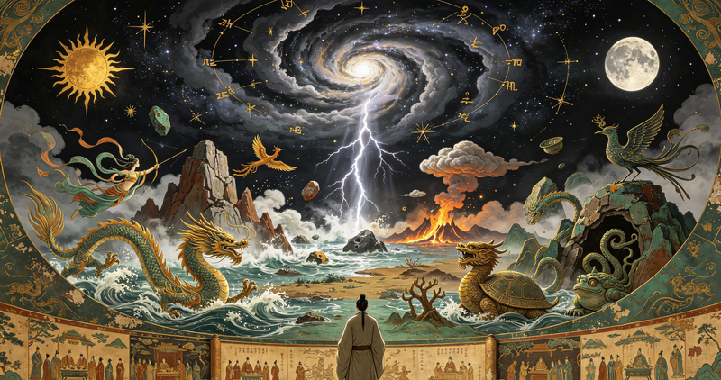

屈原

基本信息（约公元前340年—公元前278年）：芈姓，屈氏，名平，字原。战国末期楚国丹阳（今湖北宜昌秭归）人。中国历史上第一位伟大的爱国诗人，中国浪漫主义文学的奠基人。
政治生涯：早年受楚怀王信任，任左徒（相当于副宰相），主张对内举贤任能、修明法度，对外联齐抗秦。后因遭贵族排挤诽谤，先后被流放至汉北和沅湘流域。
文学成就：开创了“楚辞”诗体，代表作为《离骚》（中国最长的抒情诗），另有《九歌》《天问》《九章》等。其作品充满神话想象与香草美人比兴手法，对中国后世诗歌（尤其是唐诗宋词）影响深远。后世因此将“风”（《诗经》国风）和“骚”（《离骚》）并称为“风骚”，代指文学才华。
结局与后世影响：公元前278年，秦将白起攻破楚国郢都。屈原悲愤交加，于农历五月五日写下《怀沙》后，投汨罗江殉国。百姓闻讯争相划船捞救（后演变为赛龙舟），并投饭团入江以防鱼虾啃噬其身（后演变为粽子）。屈原的忠贞气节与忧国忧民精神，使其成为中国士大夫“忠臣”的典范，被后世历代帝王和文人高度尊崇。1953年，世界和平理事会将其列为世界四大文化名人之一。
《离骚》是情感的极致——诗人向内探索自我与命运；
《九歌》是想象的极致——诗人向外描绘神灵与人间的情感交织；
《天问》是理性的极致——诗人向上对天地万物发出终极追问。
这三部作品是屈原最核心的代表作，合在一起几乎涵盖了楚辞的灵魂。
《离骚》
《离骚》
基本定位：中国文学史上最长的抒情诗，共373句，约2490字。被后世尊为“楚辞之祖”，也是屈原自传性最强的作品。
题解：“离”通“罹”，意为遭遇；“骚”意为忧愁。“离骚”即“遭遇忧患”或“离别的忧愁”。司马迁在《史记》中解释为“离忧”。
核心内容：
诗人前半部分自述身世、理想与政治抱负，表达“美政”主张（举贤授能、修明法度）。
后半部分通过上天入地的神游幻想，向古帝重华（舜）陈词，驾飞龙、乘瑶车，历经昆仑、悬圃等仙境，却最终因眷恋故国而不忍离去。
结尾以“既莫足与为美政兮，吾将从彭咸之所居”明志，表明宁死也不放弃理想。
艺术手法：开创了“香草美人”比兴传统——以兰、芷、荷、菊等香草象征高洁品格，以美人喻君王或理想，以婚约喻君臣关系。
最著名句：
“长太息以掩涕兮，哀民生之多艰。”
“亦余心之所善兮，虽九死其犹未悔。”
“路漫漫其修远兮，吾将上下而求索。”
《九歌》
《九歌》
基本定位：一组祭祀神祇的乐歌，共11篇。原为楚地民间巫觋祭祀的歌词，屈原加工改写后，赋予其深厚的情感和文学魅力。
篇目构成（11篇）：
祀天神：东皇太一、云中君、大司命、少司命
祀地祇：湘君、湘夫人、河伯、山鬼
祀人鬼：国殇（悼念战死将士）、礼魂（送神曲）
另有《东君》（日神）
核心内容：
以人神恋歌为主要形式，描写神灵之间的爱慕、等待、相会与离别，充满缠绵悱恻的浪漫情调。
《国殇》最为特殊，描写楚国将士英勇战死的惨烈场面，充满悲壮慷慨之气。
《山鬼》写山中女神等待情人的幽怨，是全篇中文学感染力最强的一篇。
艺术特色：语言瑰丽绚烂、缠绵婉转，富有神话色彩与巫风神秘感，对后世辞赋和唐诗中的游仙诗影响深远。
最著名句：
《湘夫人》：“沅有芷兮澧有兰，思公子兮未敢言。”
《山鬼》：“若有人兮山之阿，被薜荔兮带女萝。”
《国殇》：“诚既勇兮又以武，终刚强兮不可凌。”
《天问》

《天问》
基本定位：中国文学史上最奇特的千古奇文，全诗以172个问题组成，共374句。通篇向苍天发问，对宇宙、自然、历史、神话提出系统的质疑。
题解：“天问”即“问天”，因屈原行吟泽畔，见楚先王庙壁画上有天地山川神灵之图，遂“呵壁而问之”，将疑问写于壁上。
核心内容（按逻辑分四大板块）：
1.宇宙洪荒：问天地如何开辟？日月星辰为何运行？昼夜何以交替？
2.神话传说：问女娲造人、羿射九日、鲧禹治水的具体细节与合理性。
3.历史兴亡：从夏商周到春秋战国，问历代君王成败、贤愚、祸福的原因。
4.楚国现实（隐含）：以古鉴今，影射楚国政治失序、谗佞当道的不合理。
思想价值：展现了一种早期朴素的理性批判精神——对传统神话、史书、天命观念都敢于怀疑和追问，其思辨深度在中国古文中独一无二。
艺术特色：句式以四言为主，间以杂言，一气呵成，奇崛古奥。几乎没有抒情描写，全是冷峻的诘问，读来如连珠炮般震撼。
最著名句：
“曰：遂古之初，谁传道之？上下未形，何由考之？”
（问：远古开端，谁传述下来？天地未成形时，凭什么去考察？）
“天何所沓？十二焉分？日月安属？列星安陈？”
（问：天在何处与地交会？十二辰怎么划分？日月如何附着？星辰如何陈列？）